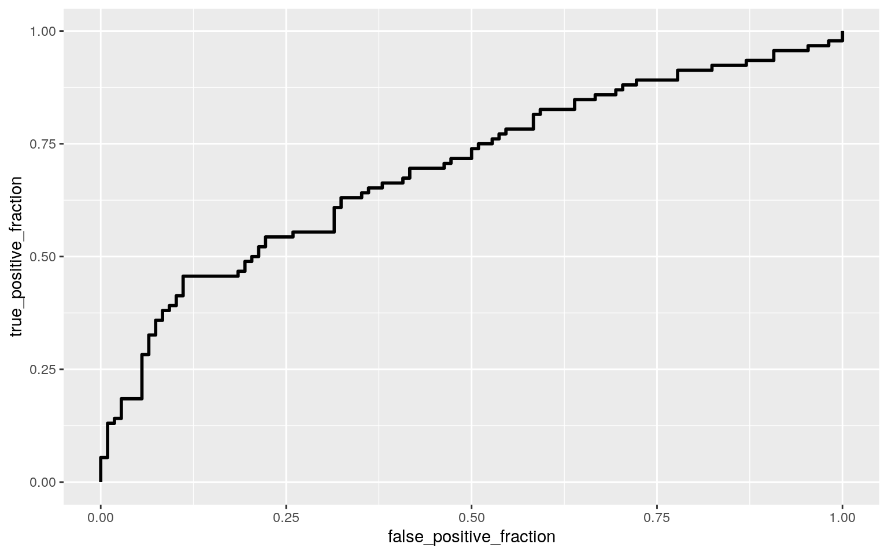

January 1, 0001
library(knitr)
hook_output = knit_hooks$get('output')
knit_hooks$set(output = function(x, options) {
# this hook is used only when the linewidth option is not NULL
if (!is.null(n <- options$linewidth)) {
x = knitr:::split_lines(x)
# any lines wider than n should be wrapped
if (any(nchar(x) > n)) x = strwrap(x, width = n)
x = paste(x, collapse = '\n')
}
hook_output(x, options)
})
knitr::opts_chunk$set(echo = TRUE, eval = TRUE,fig.align="center",warning=FALSE,message=FALSE,fig.width=8, fig.height=5, linewidth=60)
options(tibble.width = 100,width = 100)
library(tidyverse)## ── Attaching packages ─────────────────────────────────────────────────────────── tidyverse 1.3.0 ──## ✓ ggplot2 3.3.3 ✓ purrr 0.3.4
## ✓ tibble 3.0.4 ✓ dplyr 1.0.2
## ✓ tidyr 1.1.2 ✓ stringr 1.4.0
## ✓ readr 1.4.0 ✓ forcats 0.5.0## ── Conflicts ────────────────────────────────────────────────────────────── tidyverse_conflicts() ──
## x dplyr::filter() masks stats::filter()
## x dplyr::lag() masks stats::lag()#Introduction For project 2, I will use the dataset heights (used in project 1), I wanted to break this down more than I did in the first projet. This dataset includes: height, income, education, marital status, age, weight, and sex. From the 1920s to today, women have come a long way in society. I think every generation of women have been able to overcome adversity and chip away at the glass ceiling. I know there have been studies about the gender gap but I think it would be something interesting to look at in my own analysis. I am interested to see if income and education level are affected by sex. I have always been tall for a girl and I am curious to see if there are any benefits that come with height. In project 2, I will compare sex to height, income, and education to see if there are any significant differences or correlations between them.
library(dplyr)
library(rstatix)
library(modelr)
library(tidyverse)
library(gridExtra)
heights## # A tibble: 7,006 x 8
## income height weight age marital sex education afqt
## <int> <dbl> <int> <int> <fct> <fct> <int> <dbl>
## 1 19000 60 155 53 married female 13 6.84
## 2 35000 70 156 51 married female 10 49.4
## 3 105000 65 195 52 married male 16 99.4
## 4 40000 63 197 54 married female 14 44.0
## 5 75000 66 190 49 married male 14 59.7
## 6 102000 68 200 49 divorced female 18 98.8
## 7 0 74 225 48 married male 16 82.3
## 8 70000 64 160 54 divorced female 12 50.3
## 9 60000 69 162 55 divorced male 12 89.7
## 10 150000 69 194 54 divorced male 13 96.0
## # … with 6,996 more rowsheight.data <- na.omit(heights)
height.data## # A tibble: 6,645 x 8
## income height weight age marital sex education afqt
## <int> <dbl> <int> <int> <fct> <fct> <int> <dbl>
## 1 19000 60 155 53 married female 13 6.84
## 2 35000 70 156 51 married female 10 49.4
## 3 105000 65 195 52 married male 16 99.4
## 4 40000 63 197 54 married female 14 44.0
## 5 75000 66 190 49 married male 14 59.7
## 6 102000 68 200 49 divorced female 18 98.8
## 7 0 74 225 48 married male 16 82.3
## 8 70000 64 160 54 divorced female 12 50.3
## 9 60000 69 162 55 divorced male 12 89.7
## 10 150000 69 194 54 divorced male 13 96.0
## # … with 6,635 more rows#I used a random sample of 200 because this dataset is huge
set.seed(0919)
hd <- height.data[sample(nrow(height.data), 200), ]
hd## # A tibble: 200 x 8
## income height weight age marital sex education afqt
## <int> <dbl> <int> <int> <fct> <fct> <int> <dbl>
## 1 50000 67 166 50 divorced male 16 49.8
## 2 0 64 165 52 married female 13 36.1
## 3 50000 65 158 54 married female 12 48.1
## 4 18000 66 220 50 married female 16 21.3
## 5 65000 70 280 51 married male 14 19.0
## 6 56500 72 190 49 single male 15 57.8
## 7 24000 70 190 49 single male 14 84.4
## 8 0 67 190 52 single female 12 23.4
## 9 8000 61 135 48 married female 10 24.8
## 10 0 65 130 55 married female 16 84.1
## # … with 190 more rows#I also wrangled the data a little and used mutate to create a smaller income column
#I divided the income by 1000 to make the numbers easier to analyze in the project
#Just remember the income value is whatever that number is x1000
height.data1 <- hd %>% mutate(`income_fixed` = ntile(income,1000))
height.data1## # A tibble: 200 x 9
## income height weight age marital sex education afqt
income_fixed
## <int> <dbl> <int> <int> <fct> <fct> <int> <dbl> <int>
## 1 50000 67 166 50 divorced male 16 49.8 139
## 2 0 64 165 52 married female 13 36.1 1
## 3 50000 65 158 54 married female 12 48.1 140
## 4 18000 66 220 50 married female 16 21.3 80
## 5 65000 70 280 51 married male 14 19.0 161
## 6 56500 72 190 49 single male 15 57.8 150
## 7 24000 70 190 49 single male 14 84.4 95
## 8 0 67 190 52 single female 12 23.4 2
## 9 8000 61 135 48 married female 10 24.8 58
## 10 0 65 130 55 married female 16 84.1 3
## # … with 190 more rows#1 MANOVA
#check MANOVA assumptions
group <- height.data1$sex
DVs <- height.data1 %>% select(height,income,education)
#test multivariate normality for each group
sapply(split(DVs,group), mshapiro_test)## male female
## statistic 0.7559116 0.9341119
## p.value 4.621327e-11 4.488241e-05man <- manova(cbind(height,income_fixed,education)~sex, data=height.data1)
summary(man)## Df Pillai approx F num Df den Df Pr(>F)
## sex 1 0.56486 84.811 3 196 < 2.2e-16 ***
## Residuals 198
## ---
## Signif. codes: 0 '***' 0.001 '**' 0.01 '*' 0.05 '.' 0.1
' ' 1summary.aov(man)## Response height :
## Df Sum Sq Mean Sq F value Pr(>F)
## sex 1 1613.7 1613.69 211.47 < 2.2e-16 ***
## Residuals 198 1510.9 7.63
## ---
## Signif. codes: 0 '***' 0.001 '**' 0.01 '*' 0.05 '.' 0.1
' ' 1
##
## Response income_fixed :
## Df Sum Sq Mean Sq F value Pr(>F)
## sex 1 48609 48609 15.573 0.0001102 ***
## Residuals 198 618041 3121
## ---
## Signif. codes: 0 '***' 0.001 '**' 0.01 '*' 0.05 '.' 0.1
' ' 1
##
## Response education :
## Df Sum Sq Mean Sq F value Pr(>F)
## sex 1 2.03 2.0290 0.3286 0.5671
## Residuals 198 1222.59 6.1747#pairwise t.tests
height.data1 %>%group_by(sex)%>%summarize(mean(income_fixed),mean(height), mean(education))## # A tibble: 2 x 4
## sex `mean(income_fixed)` `mean(height)`
`mean(education)`
## <fct> <dbl> <dbl> <dbl>
## 1 male 117. 70.3 13.3
## 2 female 86.1 64.6 13.5pairwise.t.test(height.data1$height,height.data1$sex, p.adj = "none")##
## Pairwise comparisons using t tests with pooled SD
##
## data: height.data1$height and height.data1$sex
##
## male
## female <2e-16
##
## P value adjustment method: nonepairwise.t.test(height.data1$income_fixed,height.data1$sex, p.adj = "none")##
## Pairwise comparisons using t tests with pooled SD
##
## data: height.data1$income_fixed and height.data1$sex
##
## male
## female 0.00011
##
## P value adjustment method: nonepairwise.t.test(height.data1$education,height.data1$sex, p.adj = "none")##
## Pairwise comparisons using t tests with pooled SD
##
## data: height.data1$education and height.data1$sex
##
## male
## female 0.57
##
## P value adjustment method: noneAt least one species differs significantly for the response variable. Education and height show group differences. 1 MANOVA, 3 ANOVA, 6 t-tests were performed for a total of 10 tests. The probability of at least one type I error is 1-0.95^-10 = 0.401. The type 1 error rate with the Bonferroni correction is a = 0.005. Everything is still significant. MANOVA assumptions were not met.
#2 Randomization correlation test
x1 <- height.data$income
y1 <- height.data$height
x2 <- height.data$education
#first correlation between height and income
cor(x1,y1, method="pearson")## [1] 0.21765#second correlation between height and education
cor(x2,y1, method="pearson")## [1] 0.06570976table(height.data1$sex)##
## male female
## 92 108library(vegan)
dists <- height.data1 %>% select(income_fixed, height, education) %>% dist
adonis(dists~sex, data=height.data1)##
## Call:
## adonis(formula = dists ~ sex, data = height.data1)
##
## Permutation: free
## Number of permutations: 999
##
## Terms added sequentially (first to last)
##
## Df SumsOfSqs MeanSqs F.Model R2 Pr(>F)
## sex 1 50225 50225 16.02 0.07485 0.001 ***
## Residuals 198 620774 3135 0.92515
## Total 199 670999 1.00000
## ---
## Signif. codes: 0 '***' 0.001 '**' 0.01 '*' 0.05 '.' 0.1
' ' 1#compute observed F
SST<- sum(dists^2)/200
SSW<-height.data1%>%group_by(sex)%>%select(sex, income_fixed, height, education) %>%
do(d=dist(.[-1],"euclidean"))%>%ungroup()%>% summarize(sum(d[[1]]^2)/92 + sum(d[[2]]^2)/108) %>% pull
F_obs<-((SST-SSW)/1)/(SSW/198) #observed F statistic
Fs<-replicate(1000,{
new <- height.data1%>%mutate(sex=sample(sex)) #permute the species vector
SSW <- new%>%group_by(sex) %>% select(sex,income_fixed, height, education) %>%
do(d=dist(.[-1],"euclidean")) %>% ungroup() %>%
summarize(sum(d[[1]]^2)/92 + sum(d[[2]]^2)/108) %>% pull
((SST-SSW)/1)/(SSW/198) #calculate new F on randomized data
})
{hist(Fs,prob = T); abline(v=F_obs, col="red", add=T)}A correlation test on the numeric variables in the height dataset was conducted to see if there was any relationship .The test comparing height to income showed a low correlation between the two variables (0.217). The correlation test between height and education showed no correlation between these two variables (0.065). HO: Sex will not have a strong correlation to income, education or height. HA: Sex will have a strong correlation to income or education or height.
#3 Linear Regression
#first one for height vs income
height.data1%>%ggplot(aes(income_fixed,height))+geom_point()
fitted<-lm(height~income_fixed, data= height.data1)
summary(fitted)
height.data1%>%ggplot(aes(income_fixed,height))+geom_point()+geom_smooth(method = 'lm',se=F)
#second height vs eduation
height.data1%>%ggplot(aes(education,height))+geom_point()
fitted<-lm(education~height, data= height.data1)
summary(fitted)
fit<-lm(height ~ sex * income_fixed, data=height.data1); summary(fit)
#third height by income + sex
ggplot(height.data1, aes(x=height, y=income_fixed,group=sex))+geom_point(aes(color=sex))+
geom_smooth(method="lm",formula=y~1,se=F,fullrange=T,aes(color=sex))+
theme(legend.position=c(.9,.19))+xlab("")
#normality
par(mfrow = c(1, 2)); hist(resids); qqnorm(resids); qqline(resids, col = 'red')The intercept of 69.78 is the predicted height for males with an average income. For every unit increase in income_fixed, there is 0.004 increase in height. For people with average income, females have an average height that is -4.74 times that of males. The slope of income_fixed on height for females is 0.004 greater than for males. All assumptions were met.
#4 Bootstrapping by resampling
boot_dat<- sample_frac(height.data1, replace=T)
# repeat 5000 times
samp_distn<-replicate(5000, {
boot_dat <- sample_frac(height.data1, replace=T) #take bootstrap sample of rows
fit <- lm(height~income_fixed*sex, data=boot_dat) #fit model on bootstrap sample
coef(fit) #save coefs
})
## Estimated SEs
samp_distn %>% t %>% as.data.frame %>% summarize_all(sd)
samp_distn %>% t %>% as.data.frame %>% pivot_longer(1:3) %>% group_by(name) %>%
summarize(lower=quantile(value,.025), upper=quantile(value,.975))The SEs between all the tests were similar, with Heteroskedasticity SEs begin in the middle and Bootstrapped SEs being the largest. While the p-values changed between the Normal-theory SEs and Heteroskedasticity SEs, they values were still significant.
library(lmtest)
#5 Logistic regression with binary variable
height.data2 <- height.data1 %>% mutate(y = ifelse(sex == "male", 1,0))
log_reg<-glm(y~income_fixed + education, data=height.data2, family="binomial")
coeftest(log_reg)##
## z test of coefficients:
##
## Estimate Std. Error z value Pr(>|z|)
## (Intercept) 0.6610413 0.8250386 0.8012 0.42300
## income_fixed 0.0129282 0.0030409 4.2514 2.125e-05 ***
## education -0.1603992 0.0682191 -2.3512 0.01871 *
## ---
## Signif. codes: 0 '***' 0.001 '**' 0.01 '*' 0.05 '.' 0.1
' ' 1exp(coef(log_reg))## (Intercept) income_fixed education
## 1.9368081 1.0130121 0.8518037height.data2 <- height.data2%>%mutate(prob=predict(log_reg, type= "response"), prediction=ifelse(prob>.5,1,0))
table(predict=as.numeric(height.data2$prob>.5),truth=height.data2$y)%>%addmargins## truth
## predict 0 1 Sum
## 0 73 36 109
## 1 35 56 91
## Sum 108 92 200#accuracy
(73+56)/200## [1] 0.645#TPR
56/92## [1] 0.6086957#TNR
73/108## [1] 0.6759259#PPV
56/91## [1] 0.6153846#density plot
height.data2$logit <- predict(log_reg, type="link")
height.data2%>%ggplot()+geom_density(aes(logit,color=sex,fill=sex), alpha=.4)+
theme(legend.position=c(.85,.85))+geom_vline(xintercept=0)+xlab("logit (log-odds)")+
geom_rug(aes(logit,color=sex))
#ROC curve
library(plotROC)
classify<-height.data2%>%transmute(prob,prediction,truth=y)
ROCplot<-ggplot(classify)+ geom_roc(aes(d=truth,m=prob), n.cuts=0)
ROCplot
calc_auc(ROCplot)## PANEL group AUC
## 1 1 -1 0.6955515The data shows that every single unit increase in fixed income multiplies the odds by 1.013. The data shows that every single unit increase in education multiplies the odds by 0.852. The accuracy is 0.645. The TPR is 0.608. The TNR is 0.675. The PPV is 0.615. The AUC is 0.695. From these values, we can see that the model isn’t a very good because the AUC value is pretty low.
#6 log regression w more variables
height.data3 <- height.data2 %>%mutate(y = ifelse(sex == "male",1,0))
height.data3$sex <- NULL
log_reg_all <-glm(y~., data=height.data3, family = "binomial")
prob2 <- predict(log_reg_all)
coef(log_reg_all)## (Intercept) income height weight age
## -8.011928e+01 1.312130e-05 8.300071e-01 -7.756703e-03
6.053745e-02
## maritalmarried maritalseparated maritaldivorced
maritalwidowed education
## -7.003741e-01 -1.696621e+00 -1.079918e+00 -2.642955e+00
1.129832e+00
## afqt income_fixed prob prediction logit
## -2.682492e-02 -9.979234e-02 4.216836e+01 -1.351479e+00
NAexp(coef(log_reg_all))## (Intercept) income height weight age
## 1.601915e-35 1.000013e+00 2.293335e+00 9.922733e-01
1.062407e+00
## maritalmarried maritalseparated maritaldivorced
maritalwidowed education
## 4.963996e-01 1.833019e-01 3.396234e-01 7.115069e-02
3.095136e+00
## afqt income_fixed prob prediction logit
## 9.735317e-01 9.050253e-01 2.058189e+18 2.588572e-01 NAclass_diag <- function(probs,truth){
#CONFUSION MATRIX: CALCULATE ACCURACY, TPR, TNR, PPV
tab<-table(factor(probs>.5,levels=c("FALSE","TRUE")),truth)
acc=sum(diag(tab))/sum(tab)
sens=tab[2,2]/colSums(tab)[2]
spec=tab[1,1]/colSums(tab)[1]
ppv=tab[2,2]/rowSums(tab)[2]
f1=2*(sens*ppv)/(sens+ppv)
if(is.numeric(truth)==FALSE & is.logical(truth)==FALSE) truth<-as.numeric(truth)-1
#CALCULATE EXACT AUC
ord<-order(probs, decreasing=TRUE)
probs <- probs[ord]; truth <- truth[ord]
TPR=cumsum(truth)/max(1,sum(truth))
FPR=cumsum(!truth)/max(1,sum(!truth))
dup<-c(probs[-1]>=probs[-length(probs)], FALSE)
TPR<-c(0,TPR[!dup],1); FPR<-c(0,FPR[!dup],1)
n <- length(TPR)
auc<- sum( ((TPR[-1]+TPR[-n])/2) * (FPR[-1]-FPR[-n]) )
data.frame(acc,sens,spec,ppv,f1,auc)
}
truth = height.data3$y
class_diag(prob2, truth)## acc sens spec ppv f1 auc
## 1 0.865 0.8043478 0.9166667 0.8915663 0.8457143 0.9527979table(prediction=as.numeric(prob2>.5), truth)%>% addmargins()## truth
## prediction 0 1 Sum
## 0 99 18 117
## 1 9 74 83
## Sum 108 92 200#10 fold
set.seed(1234)
k=10
# your code here
## k-fold CV
data_CV<-height.data3[sample(nrow(height.data3)),] #randomly order rows
folds<-cut(seq(1:nrow(height.data3)),breaks=k,labels=F) #create folds
diags<-NULL
for(i in 1:k){
## Create training and test sets
train<-data_CV[folds!=i,]
test<-data_CV[folds==i,]
truth1<-test$y ## Truth labels for fold i
## Train model on training set (all but fold i)
fitCV1<-glm(y~.,data=train,family="binomial")
## Test model on test set (fold i)
probs_CV<-predict(fitCV1,newdata = test,type="response")
## Get diagnostics for fold i
diags<-rbind(diags,class_diag(probs_CV,truth1))
}
summarize_all(diags,mean) #average diagnostics across all k folds## acc sens spec ppv f1 auc
## 1 0.83 0.7881169 0.8570843 0.8274964 0.8038632 0.9073991#LASSO
library(glmnet)
set.seed(1234)
# your code here
y<-as.matrix(height.data$sex) #grab response
x<-model.matrix(sex~.,data=height.data)[,-1] #predictors (drop intercept)
head(x)## income height weight age maritalmarried maritalseparated
maritaldivorced maritalwidowed education
## 1 19000 60 155 53 1 0 0 0 13
## 2 35000 70 156 51 1 0 0 0 10
## 3 105000 65 195 52 1 0 0 0 16
## 4 40000 63 197 54 1 0 0 0 14
## 5 75000 66 190 49 1 0 0 0 14
## 6 102000 68 200 49 0 0 1 0 18
## afqt
## 1 6.841
## 2 49.444
## 3 99.393
## 4 44.022
## 5 59.683
## 6 98.798x <- scale(x)
cv <- cv.glmnet(x,y, family="binomial")
lasso<-glmnet(x,y,family="binomial",lambda=cv$lambda.1se)
coef(lasso)## 11 x 1 sparse Matrix of class "dgCMatrix"
## s0
## (Intercept) -0.046844252
## income 0.403329228
## height 2.499670348
## weight 0.003652838
## age .
## maritalmarried .
## maritalseparated -0.013685239
## maritaldivorced .
## maritalwidowed -0.105466531
## education -0.377102641
## afqt -0.143291136#10-fold CV
set.seed(1234)
k=10 #choose number of folds
data1<- height.data %>% sample_frac
folds <- ntile(1:nrow(data1),n=10)
diags<-NULL
for(i in 1:k){
train<-data1[folds!=i,]
test<-data1[folds==i,]
truth <- test$sex
fit5<-glm(sex~income + height + weight, data=train, family="binomial")
probs5 <- predict(fit5, newdata=test, type="response")
yhat<-predict(fit5,newdata=test)
diags<-rbind(diags,class_diag(probs5,truth))
}
diags%>%summarize_all(mean)## acc sens spec ppv f1 auc
## 1 0.8466469 0.8637308 0.8289447 0.8419588 0.8525332
0.9236122For the in sample analysis the ACC is 0.865, TPR is 0.804, TNR is 0.916, PPV is 0.892, and AUC is 0.953. For the out sample analysis the the ACC is 0.83, TPR is 0.788, TNR is 0.827, PPV is 0.803, and AUC is 0.907. From these results, we can see that the in sample diagnostic greatly improved the AUC value compared to the original. The out of sample diagnostic decreased the AUC value from the in sample diagnostic. For CV lasso the ACC is 0.846, TPR is 0.864, TNR is 0.829, PPV is 0.842, and AUC is 0.924. The AUC value increases compared to the out of sample diagnostic where is slightly dropped from the in sample diagnostic. The lowest AUC value came from the out of sample diagnostic compared to the other classification diagnostic analysis.